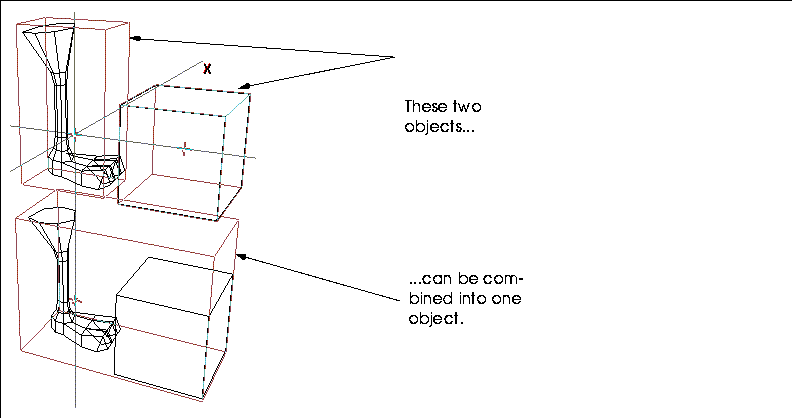
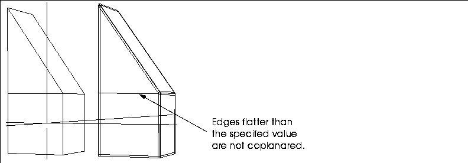

[N-World Contents] [Book Contents] [Prev] [Next] [Index]
Working with Bodies
This section describes the operations that let you directly modify a body's geometry. We call a change to an object's body a modification.
As described earlier, an object is made up of two elements:
If you want to make changes to the shape of an object without altering its transformation matrix, you want to modify its body.
You can modify a body by selecting points, segments, faces, or the entire body. To modify a body:
1. (CLICK-L) on the type of element you want to modify in the element sensitivity menu.
2. Move the mouse over the element you want to modify in N-Geometry.
3. When the element is highlighted, (SHIFT-L).
- After you (SHIFT-L) on the element, a context-sensitive menu of modify operations is displayed; only modification which may be performed on the selected element type are displayed in the menu:
Figure 4.1 Short Modify menu for body elements
- The mouse is automatically positioned over the menu.
4. Move the mouse over the commands.
- As you move over each command it is highlighted. The mouse documentation line at the bottom of the screen gives a brief description of what will happen with each mouse click on the currently highlighted command.
5. Click on the command using the appropriate mouse button.
- You can refer to the mouse documentation line for a quick prompt as to what each mouse click does, or refer to the documentation in this chapter.
You can specify whether you want to use short, full, or custom menus by using the GeoMenus>Custom Menus command.
Add to Part
Faces, edges, vertices
A part is a collection of one or more elements of the same type. Parts are useful for assigning attributes to multiple elements and for storing collected elements. A part can have several parts made of faces, edges, or vertices.
Aspect Ratio
Spotlights with rectangular spot patterns
Interactively updates the aspect ratio of the selected spotlight's spot pattern. This command is only available if the light's spot pattern has been changed to Rectangle ( by modifying the light in the Attributes Editor).
Figure 4.2 Left, original light; right, same light with modified aspect ratio
Axis Move
Edges, faces, body, vertices
Moves an object along a selected axis.
(CLICK-L) to move the body along an axis you select from a menu, or (CLICK-R) to move the body away from another specified element.
If you (CLICK-L) to move along a selected axis, a menu with the following choices is displayed:
If you (CLICK-R) on Axis Move, you're asked to specify an element away from which the body should move.
Axis Scale
Most element types
Lets you scale an element along a specified axis or radially scale outward from a specified axis.
Figure 4.3 Left, original cube; right, copy scaled on X-axis from object's midpoint
Figure 4.4 Left, original cube; right, copy scaled (down) radially on X-axis from object's midpoint
Bevel
Edges, faces, polyhedra, vertices
Beveling an edge or vertex removes that edge or vertex and replaces it with a face at an angle between the two faces that shared that edge or vertex.
Figure 4.5 Cube with beveled edge. with beveled vertex, and beveled cube
Beveling a polyhedron bevels all its edges, or all edges that exceed a specified degree of acuteness.
Figure 4.6 Specifying bevel parameters
Bless
Bodies
Verifies that all elements within an encoded polyhedron have been correctly connected. Errors are listed in the UNIX shell from which N-Geometry was started. Minor problems, such as an element's missing pointer, are corrected if other references to the element are located.
Bridge
Faces
Creates a passage or tunnel between two faces of the same polyhedron or between two discrete polyhedra. To bridge two faces, (SHIFT-L) on the first face, then choose the Bridge operation, then select the second face using one of the following options:
Figure 4.7 Cube with tunnel between inset faces on opposite sides
- Separate faces on the concave portion of a polygon can also be bridged:
Figure 4.8 Concave polyhedra with bridge across void
1. Make sure the objects are in their home position before bridging them:
- You can use Set Home (with objects selected on the element sensitivity menu) to reinitialize the matrix, making sure each object's transformed position is its home position. For this example, let's join faces on two separate cubes:
Figure 4.9 Two discrete polyhedra
2. (SHIFT-L) on the first face you want to bridge, then (CTRL-L) on Bridge.
3. (CLICK-L) on the face you want to bridge to.
- The second object is bridged to the first:
Figure 4.10 Two discrete polyhedra, bridged
- If you select the cube and move it, you can see that the second cube still is separate:
Figure 4.11 Bottom, first cube with bridged object; top, original second cube
Figure 4.12 Two discrete polyhedra, with bridge faces triangularized
Brightness
Ambient, point, infinite, and spot lights
Interactively adjust the relative intensity (strength) of a light (in the same way that a 100 watt bulb is brighter than a 50 watt bulb).
To adjust the intensity of a light interactively:
1. (CLICK-L) on points on the element sensitivity menu.
2. (SHIFT-L) on the light, then (CLICK-L) on Intensity.
- Move the mouse left and right to adjust the hue of the light.
As you move the mouse, both the body and its emitted light update interactively. Note also that the lines for the light change to show its relative brightness:
Figure 4.13 Lights with different brightness settings; the longer lines on the light on the left indicates the light is brighter
For more information on lights, see the sections "Hue," on page 4-41, and "Saturation," on page 4-79.
- Note. You can also adjust the brightness of the light using the Attributes Editor, or use (CTRL-L) on Brightness to set the light value numerically.
Change Sampling
Bezier curves
Changes the number of segments for display and when subdivided (useful when using bezier curves to make solids of rotation and contour solids). The two examples below show the effect of changing the sampling rate:
Figure 4.14 Top, Bezier curve segment with sampling rate of 11; bottom, same segment sampled at 5
Chip Off
Faces, collections of faces
Creates a new object from a selected face.
- Note. If you select a collection of faces, individual objects are created for each selected face.
Figure 4.15 Flat polyhedron chipped off one end of a cube
If you use Chip Off on a collection of faces, each face is a separate object, and can be manipulated independently as discrete objects. However, all the chipped off faces are initially grouped into a top level object. You can use the Restructure command if you want to move the individual chips up to top level objects.
Figure 4.16 Each face created from a collection with Chip Off is a unique object; here, with (CLICK-R) to move faces along face normals
Chipped off faces are grouped under the top level object "N Chips from Object" by default. Subobjects are named "Chip from Object, Face N".
Chip Off Region
A collection of faces
This is similar to Chip Off, described above, except that the chipped off faces are treated as a single object:

Figure 4.17 Each face created from a collection with Chip Off is a unique object
Faces need not be touching to be chipped off as a region:
Figure 4.18 Each face created from a collection with Chip Off is a unique object
A chipped off region is named "Region of Original Object, N Faces" by default.
Collapse
Edges, faces, vertices, bones
Takes the selected element and reduces it to a point. In the case of a vertex, the vertex and all its edges are eliminated and the gap is filled with a face.

Figure 4.19 From left, collapsed vertex, edge, and face
Color
Ambient, point, infinite, and spot lights
Interactively adjust the brightness, hue, and saturation of lights interactively. To adjust the intensity of a light interactively:
1. (CLICK-L) on points on the element sensitivity menu.
2. (SHIFT-L) on the light, then (CLICK-L) on Color.
For more information on each of these parameters, see the sections "Brightness," on page 4-9, "Hue," on page 4-41, and "Saturation," on page 4-79.
Combine
Polyhedron
Combines the selected collection of bodies into a single new object. Each of the original bodies combined is made a part in the newly created object, and can be referenced as a part with the Parts command.
This option is extremely useful for combining objects into a single object before export to a 3D game console. Also, combined objects can be animated as a single object in N-Dynamics.

Figure 4.20 An object and its mirrored copy
To combine a several bodies into one object:
1. (CLICK-R) on bodies in the element sensitivity menu
2. Make a collection of the bodies you want to combine and (SHIFT-L).
3. (CLICK-L) on Combine.
- A copy of each of the collected bodies is created (in the same locations as the originals) and combined into a new object.
Connect New
Wires
Extend an existing wire, either by adding segments to either end of the wire or connecting one wire to a point on another wire.
Continuity
Bezier curve wire control points
Lets you modify Bezier curves interactively and specify endpoint continuity constraints. Constraining the endpoints makes the endpoint line up with both of its neighboring points. Continuity is available on the Modify Element menu for interior control points only; the constraint is applied to the neighboring endpoint.
Using this command makes the inner part of a curve more continuous. To change the continuity of a bezier curve:
1. Encode a wire.
2. (CLICK-L) on segments from the sensitivity element menu.
3. (SHIFT-L) on an interior (non-end) segment.
4. Choose Replace with Bezier.
5. Select points from the sensitivity element menu.
6. Move the mouse over the segment that you converted into a bezier curve.
- One or more control points now appear along the curve.
7. (SHIFT-L) on one of the control points.
8. Choose Move from the modify object menu.
Moving the control point changes the shape of the bezier curve, but keeps the path smooth.
Figure 4.21 illustrates a wire containing a Bezier curve (the middle segment), with continuity applied to the lower vertex of the Bezier curve.
Figure 4.21 A Bezier curve with Continuity applied
Note that the path along the wire is more continuous, without the sharp angles, after applying the Continuity command.
Convexify
Faces, polyhedra
Decomposes a face or all faces into convex polygons. (Some renderers require that there be no concave polygons on an object before it is rendered.)
A concave face is one in which you can start a line, pass outside the polygon, then continue the straight line and return to the inside of the polygon:
Figure 4.22 Test for concave face
Note that this is not a test for a face being planar or non-planar, but concave or convex. Concave faces look as if someone has "taken a bite" out of their perimeter. Convexify cuts faces that are concave to make them convex:
Figure 4.23 Left, concave face (selected); right, selected face made convex with Convexify
- Note. Convexify might subdivide a face in a manner you did not intend. If you plan to render a non-planar face that needs to be decomposed and you have a preference for how the face should be cut, it might be better to manually cut the face so that you can control how the face is rendered.
Coplanar
Edges, faces, polyhedra
Creates narrow faces on either side of any selected edge or along the edges of a selected polyhedra or face. These faces lie in the same plane as the faces they abut and are used to limit the shading interpolation to the region around the edge of the polyhedron when rendering.
Figure 4.24 Specifying bevel parameters
Figure 4.25 Original object and object with coplanared edges
Figure 4.26 Original object and object with coplanared edges
This menu is identical to that described above, except you can specify a Cutoff Hardness value. Any edge greater than the specified number of degrees is coplanared; edges flatter than the specified value are not coplanared:

Figure 4.27 Original object and object with hard edges coplanared
Copy
Bodies
Creates a geometrically discrete copy of the selected polyhedron. The copy becomes the body of the newly created object. Copy should be distinguished from Reinstance, which makes a new instance of the object but does not physically create a new body.
Figure 4.28 An object and its copy
Copy into Trajectory
Wires
Trajectories are paths that you can use in N-Dynamics to animate the movement of objects. Copy into Trajectory makes a trajectory by using the selected wire as the control wire for the newly generated trajectory:
1. (SHIFT-L) on a previously encoded wire.
2. (CLICK-L) on copy into trajectory.
- The trajectory wire appears in the same location as the original, but is now a new, unique object; its shape is controlled by a control wire of the same shape as the original wire:
Figure 4.29 Top, original wire; right, generated trajectory with control wire
- To modify the shape of the trajectory, move points on the control wire.
Copy Into Wire
Trajectories
Makes a new wire, based on the selected trajectory. This is the companion operation to Copy into Trajectory; you can convert between the two states depending on what type of operation you want to perform.
Copy, mirrored
Polyhedra
Mirrors the geometry of the body around a selected face, creating a new object whose body effectively doubles the geometry that of the original. The original object is retained, unlike the Mirror operation.
A useful technique is to create half ot a model (e.g., the left half), then perform a Copy, mirrored operation around the face running down the side of the model. If your model is essentially symmetrical, you can mirror around a face and effectively cut your modeling time in half!
Figure 4.30 An object and its mirrored copy
Cull Elements
Polyhedra
Cleans up a polyhedron. This command is particularly useful for cleaning up objects imported from other systems which may need to be cleaned up. If you (CLICK-L) on Cull Elements, the following menu opens:
Figure 4.31 Cull elements menu
(CLICK-L) on the anomolaies you want to search for:
Cut
Faces, segments
Subdivides a face between any two vertices or cuts a wire into a smaller number of segments.
For a face:
Figure 4.32 Left, original cube; right, right face cut between two points
For a segment:
Figure 4.33 (CTRL-M) on Cut to divide a segment
Figure 4.34 (CTRL-R) on Cut to divide a segment
So if you were cutting a 10" segment, a Dist/Ratio of .5 would cut the segment in half if you chose Edge Ratio from Vtx, or .5" from the selected vertex if you chose Distance from Vtx.
(CLICK-L) on [Next] to continue...
[N-World Contents] [Book Contents] [Prev] [Next] [Index]
 Another fine product from Nichimen documentation!
Another fine product from Nichimen documentation!
Copyright © 1996, Nichimen Graphics Corporation. All rights
reserved.